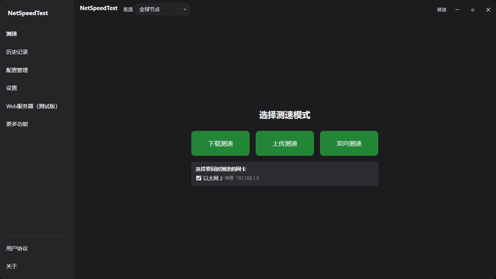
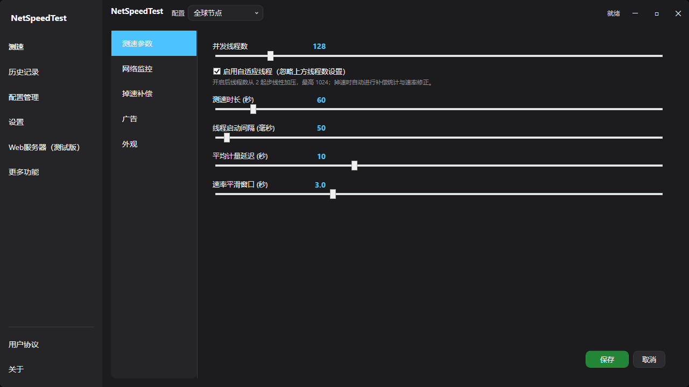

智能测速引擎
- 128 线程并发 HTTP GET / POST，自适应模式最高 1024
- URL 轮转调度 + 健康度评分，失败节点自动冷却降权
- 掉速紧急补偿：自动加线程并修正结果
- 跳过爬坡取均值 + 3 秒滑动窗口去毛刺
- 渐变启动，避免瞬间占满带宽
CDN 智能调度 · 自适应线程引擎 · 多网卡并行测速 · UDP 五层延迟探测 · 18 合 1 工具箱，一款工具全部搞定。
从线程调度、链路探测到结果计量，每一层都按专业标准实现。
暗色主题 · 侧边栏内嵌页 · 自绘标题栏，测速、历史、设置与远程控制都在一个窗口完成。


内置 18 种专业网络诊断工具，测速之外的连通性、解析、证书与 NAT 排查同样覆盖。
默认值已经够快；想折腾的人，每个参数都能调。
| 参数 | 范围 | 默认 |
|---|---|---|
| 并发线程数 | 2 – 1024 | 128 |
| 测速时长 | 10 – 600 s | 60 s |
| 线程启动间隔 | 0 – 2000 ms | 50 ms |
| 平均计量延迟 | 1 – 30 s | 10 s |
| 速率平滑窗口 | 0.5 – 10 s | 3.0 s |
| 网卡轮询间隔 | 200 – 5000 ms | 1000 ms |
| 延迟轮询间隔 | 500 – 10000 ms | 1000 ms |
| 抖动采样间隔 | 500 – 5000 ms | 1000 ms |
| 抖动探测主机 | — | 8.8.8.8 |
| 丢包率监测地址 | — | 8.8.8.8 |
| 丢包率轮询间隔 | 500 – 5000 ms | 1000 ms |
| 补偿阈值 | 0.3 – 0.8 | 0.5 |
| 确认时长 | 1 – 10 s | 3 s |
| 自适应起始线程数 | 1 – 1024 | 2 |
| 自适应线程上限（派生） | 128 / 256 / 512 / 1024 | 1024 |
| Web 服务器端口 | 1024 – 65535 | 8080 |
自适应上限由引擎派生：单网卡 1024，多网卡按份额折算；Web 端口在「Web 服务器」页设置，其余参数在「设置」页调整。
内置 HTTP 服务器，手机或同网段电脑用浏览器即可查看与操控测速。
| 方法 | 路径 | 说明 |
|---|---|---|
| GET | /api/status | 测速状态、实时速率与当前端口 |
| GET | /api/adapters | 网卡列表与选中状态 |
| POST | /api/adapters/select | 切换参与测速的网卡 |
| GETPOST | /api/profiles | 读取或保存测速配置 |
| GETDELETE | /api/history | 分页读取或清除历史记录 |
| GETPOST | /api/settings | 读写测速参数（原子落盘） |
| POST | /api/test/start | 开始测速（运行态确认后返回 200） |
| POST | /api/test/stop | 停止测速（准备阶段同样可取消） |
| GET | /api/server | 端口、局域网状态与网段绑定 |
基于 .NET 8 与 WPF 的 MVVM 架构，依赖克制而清晰。
NetSpeedTest/ ├─ .github/ # CI & community templates ├─ docs/ # GitHub Pages site, design spec & QA archive ├─ src/NetSpeedTest/ # WPF app: MVVM, services, themes ├─ tests/NetSpeedTest.Tests/ # xUnit regression suite ├─ tools/ # docs, QA, verification & capture scripts ├─ NetSpeedTest.sln └─ README.md / CHANGELOG.md
每个版本都经过实机测速验证，拒绝空壳功能。
最近三个版本如上，完整记录见 CHANGELOG.md →
Windows 10 / 11 · .NET 8 单文件发布 · 约 170 MB · MIT 开源免费
或者从源码构建：git clone https://github.com/lingyingaojue/NetSpeedTest.git && cd NetSpeedTest && dotnet run --project src/NetSpeedTest/NetSpeedTest.csproj
欢迎反馈问题、交流使用经验或合作。